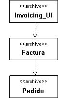

Explicación
Un uso importante de una relación de dependencia es representar las dependencias de compilación. Una dependencia de
compilación existe a partir de un elemento hasta los elementos necesarios para compilarla. En C++, por ejemplo, las
dependencias de compilación se indican con sentencias #include. En Ada, las dependencias de compilación se indican con
la cláusula with. En Java, la dependencia de compilación se indica con la sentencia import. En general, no deben
existir dependencias de compilación cíclicas.
Ejemplo 1:
El diagrama de componentes siguiente ilustra las dependencias de compilación entre archivos de origen. El archivo
Invoicing_UI (en la parte superior), requiere Factura, que requiere Pedido para poderse compilar.

Figura 1: Ejemplo de dependencias de compilación (Genérico)
|